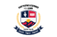

Meet Our Partners
At BinaryTree, we're proud to collaborate with organizations across Africa that share our vision of equitable digital education. These local partners help us bring technology and opportunity to underserved communities.

TEDI Tanzania
TEDI (Tanzania Enlightenment Development Innovations) operates across rural Tanzania to bring innovation into education. With their support, we've run digital literacy workshops, provided refurbished laptops to schools, and helped train over 150 students in foundational computing in Python. Right now, TEDI Tanzania is working on a variety of different projects, one of which is the Employability Skills Enhancement Program (ESEP). Through ESEP, university students and graduates are being equipped with fundamental 21st century skills like critical thinking, technology literacy, creativity, and leadership. TEDI is also leading the TEDI Entrepreneurs Generator Program, which is a program that focuses on preparing the next generation of leaders and risk-takers. Finally, TEDI is leading the ONE COMPUTER LAB ONE SCHOOL PROJECT, which aims to equip public schools with computer labs and resources to help with digital literacy.

COHECF-Kenya
COHECF-Kenya (Christian Community Healthcare Foundation Kenya) is a non-profit headquarted in Kenya. COHECF-Kenya operates with a community-driven approach to development. They are aiming to lay the foundation for long-term growth and resilience in Kenya and across Africa. COHECF has led many projects such as the Improving Financial Awareness & Financial Literacy Movement in Kenya. It is a broad based media and education initiative that ultimately aims to spread financial literacy across Kenya and beyond.

GNO FAR Senegal
GNO FAR (Jeunesse en Action) is a Senegalese non-profit. It's main purpose is to support youth, children, establishment of permanent peace and local development. Their aim is to create well-organised opportunities for young people in order for them to lead the developing process. They have done various projects in order to progress with these key ideals.

Hawthorne-Scriber High School
Hawthorne-Scriber High School is a high school located in Uganda. Their main mission is to provide holistic education that empowers students with knowledge, values, and skills for lifelong learning and service to humanity. They also actively engage in outreach programmes that support local development and student mentorship.